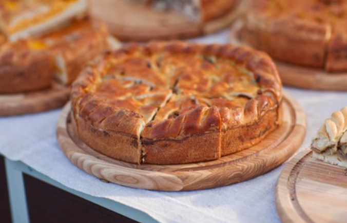

Samedi 4 décembre 2021: Vente de gâteau au profit de l'association.
Samedi 15 janvier 2022: Tournoi inter-communales. Rendez-vous à 15h au dojo de Tarare (Les mesures contre le convid-19 nous imposes un nombre maximal de spectateur. Pensez à réserver).

Samedi 25 juin 2022: Passage de grade. Rendez-vous au Dojo de Tarare à partir de 13h.